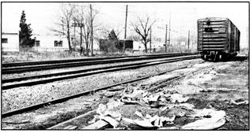

"Gold," they say, "is where you find it." And Armand Ferrara "strikes it rich" down by the railroad tracks.
You've heard of bird watchers. Well, I'm a railroad siding watcher . . . and my garden is better off for it.
Hanging around freight train sidings may not exactly be your idea of a good time-and I don't blame you-but what if I told you that a bonanza of free gardening supplies awaits you down by the tracks? It's true.
I learned this interesting fact one day as I sat drinking coffee in a restaurant that happened to be across the street from some train sidings. I'd been idly watching the day's unloading activities, when suddenly it dawned on me that-not ten yards away-men were hastily transferring bags of peat moss from a boxcar to the back of a truck (thence to be driven away to a landscaping or garden shop, no doubt).
"The vegetables and flowers in my garden could sure use some of that moss," I thought silently. Of course, like many other green-thumbers, I was accustomed to buying several bags of sphagnum each year to use as mulching material and to loosen up the clayey soil at the rear of my garden. And like all the others, I'd discovered that [1] a few bags won't go very far and [2] any truly useful quantity of the organic material is prohibitively expensive.
You can well imagine how shocked I was, then, to witness the deliberate dumping of several bales of "brown gold" (each of which had split open in transit or during the unloading process) on the ground along the siding as the truck was being loaded.
Two cups of java later and just before the truck pulled away, I was ready to make my move. Exiting the cafe, I strolled across the street to ask the drivers if I could-as I discreetly put it-"clean up" the peat moss they'd abandoned along the siding. They gave me the go-ahead, and by late afternoon I'd stored most of the loose sphagnum in a neat pile at the back of my yard. (The organic matter was soon distributed from the stack to my rose bushes, flowerbeds, a nd the other gardening areas that I wanted covered.) Conservatively speaking, I'd estimate that my cleanup had netted me no less than eight bales of peat moss from the train siding. I began to watch the stretch of tracks with a great deal of interest!
A few weeks later-following the unloading of some skids of bricks-my garden became heir to a goodly quantity of straw that had been used as a buffer between the building blocks. Again, I'd asked the men in charge of the unloading operation for permission to "clean up" . . . and that's exactly what I did. The straw became a mulch for my rows of vegetables and what was left over went through the compost shredder and onto the heap.
Shipments of pipe are frequently unloaded at my local railroad siding, and the rough lumber which is used to hold the pipes apart during transit-4 X 4 beams ranging from four to eight feet in length-oftentimes ends up being strewn along the tracks. This wood would normally be cleaned up later by work crews and probably burned. But again, with permission (and this is something you can never afford to be without) I load up the treasures and cart them home where they can be used around the yard for edging and terrace retainers.
I've also netted several free bushels of wood chips (from bags which had-like the bags of peat moss-ruptured in shipping) by being in the right place at the right time. These chips added a finishing touch to my flowerbeds.
I could give other examples, but by now you've probably gotten the idea. A veritable gold mine of gardening materials is going to waste at your town's freight train unloading depot. Avail yourself of these materials-become a railroad siding watcher-and you'll not only eliminate unwanted eyesores (see photo), but you'll greatly beautify your backyard . . . and perhaps put a few more vegetables on the table as well!
|
 |
|
|